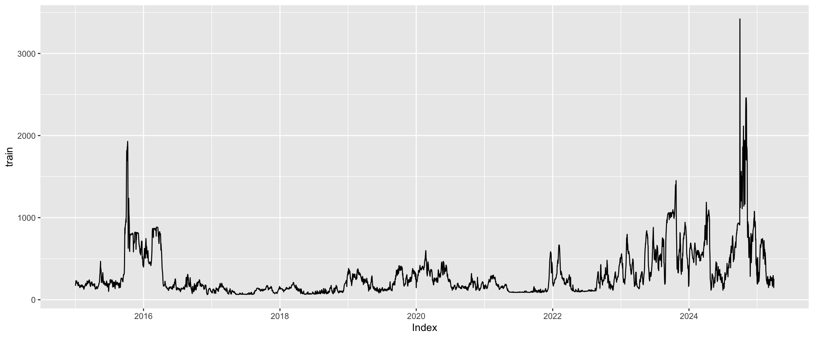
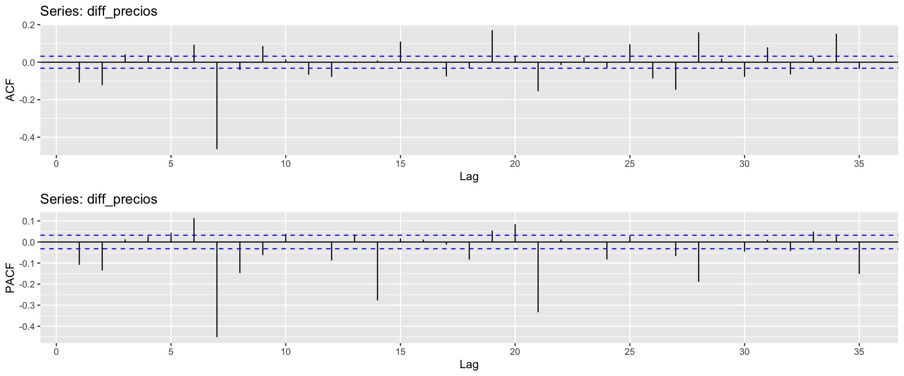

Fecha_Hora Valor
1 2015-01-01 00:00:00 184.2101
2 2015-01-01 01:00:00 178.2101
3 2015-01-01 02:00:00 178.2101
4 2015-01-01 03:00:00 178.2101
5 2015-01-01 04:00:00 178.2101
6 2015-01-01 05:00:00 178.2101Taller 5 - Series de tiempo
0. Información general
Los datos contienen la información de los precios en bolsa de la energía en Colombia (COP/kWh). Asumimos que somos compradores de energía, por lo que el pronosticar los precios de la energía es una herramienta esratégica fundamental para la estabilidad financiera, estabilidad operativa y planificación al largo plazo. Además, el mercado de energía en Colombia es volátil, por lo ntao, el poder anticiparnos al comportamiento de los precios nos ayudarán a tomar decisiones de cuánto y cuándo comprar y buscar de alternativas que nos permitan mitigar el riesgo operativo o financiero.
Pregunta objetivo: ¿cuáles serán los precios de la energía para los siguientes 7 días?
Concepto de Serie de Tiempo Una serie de tiempo es una secuencia de observaciones de una medida variable en intervalos de tiempo regulares. En este caso, los precios de la energía se registran diariamente. Las series temporales se caracterizan por componentes como tendencia (dirección general a largo plazo). Los componentes clave de una serie de tiempo son:
Tendencia: El movimiento de largo plazo de la serie (creciente o decreciente).
Estacionalidad: Patrones que se repiten en intervalos de tiempo fijos y conocidos (e.g., diario, semanal, mensual, anual).
Ciclos: Patrones que no tienen una periodicidad fija y se extienden a través de años (relacionados con ciclos económicos).
Irregularidad/Ruido: Componente residual o aleatorio.
Modelo ARIMA ARIMA (Autoregressive Integrated Moving Average) es un modelo:
- AR (Autoregresivo) : Relaciona el valor actual con valores pasados
- I (Integrado) : Representa el grado de diferenciación necesario para hacer la serie estacionaria
- MA (Media Móvil) : Modela el error de predicción como una combinación lineal de errores pasados
Importancia y utilidad de modelos ARIMA Los modelos ARIMA/SARIMA son esenciales en la predicción de series temporales, especialmente en mercados volátiles como el de energía, debido a:
Manejo de la No-Estacionariedad: El componente ‘I’ (Integrado) permite transformar series con tendencia o estacionalidad en series estacionarias (mediante la diferenciación), requisito fundamental para una predicción precisa.
Incorporación de Dependencia Temporal: El componente AR (Autoregresivo) y MA (Media Móvil) captura de manera explícita la inercia y los shocks de la serie de tiempo (que el precio de hoy depende del de ayer, y de errores pasados).
Pronóstico a Corto Plazo Robusto: Son modelos parsimoniosos y muy efectivos para pronósticos a corto plazo, donde la estructura temporal pasada (tendencia y estacionalidad) es la mejor guía del futuro inmediato.
Toma de Decisiones Estratégicas: Para un comprador de energía, pronosticar los precios permite:
Estabilidad Financiera: Presupuestar costos futuros.
Mitigación de Riesgos: Determinar cuándo comprar en el mercado spot vs. asegurar contratos a largo plazo.
1. Análisis exploratorio
1.1. Revisión de datos faltantes
| x | |
|---|---|
| Fecha_Hora | 0 |
| Valor | 0 |
Hallazgo: No se encontraron datos faltantes (NA) en las columnas Fecha_Hora ni Valor. Esto simplifica el preprocesamiento de datos.
1.2. Revisar comportamiento del precio por día

Vemos que la distribución diaria de los precios de la energía no son simétricos, por lo tanto se agregarán los datos utilizando dos medidas: mediana y media. La mediana nos ayudará para visualizar tendencias y estacionalidades en la serie de tiempo. La media nos ayudará a identificar diías en los que el precio fue más volátil.
Análisis: El boxplot diario muestra la distribución del precio horario. La asimetría (skewness) en la distribución diaria de los precios es común en los mercados de energía (alta volatilidad), donde se observan outliers o precios extremos.
Implicación: Utilizar la mediana minimiza la influencia de estos valores extremos (outliers) y ofrece una visión más estable de la tendencia central diaria. El promedio sí refleja el impacto de los días con alta volatilidad, útil para medir el riesgo, como se indica.
1.3. Gráfico de la serie de tiempo
| Fecha | Precio_Mediana | Precio_Promedio | |
|---|---|---|---|
| Min. :2015-01-01 | Min. : 60.31 | Min. : 61.84 | |
| 1st Qu.:2017-09-07 | 1st Qu.: 118.82 | 1st Qu.: 122.17 | |
| Median :2020-05-15 | Median : 187.46 | Median : 189.66 | |
| Mean :2020-05-15 | Mean : 293.94 | Mean : 294.72 | |
| 3rd Qu.:2023-01-21 | 3rd Qu.: 350.79 | 3rd Qu.: 347.94 | |
| Max. :2025-09-28 | Max. :2498.80 | Max. :3420.85 |

Complementar con: • Estadísticas descriptivas de la serie (media, desviación estándar, tendencia, estacionalidad, etc.).
Con base en el gráfico anterior, no hay mucha diferencia entre la mediana y la media en la serie de tiempo a analziar. Por lo tanto, para este caso, se escogerá el precio promedio como la serie a trabajar.
Estadísticas Descriptivas:
Media vs. Desviación Estándar: La media del Precio Promedio tiende a ser ligeramente mayor que la mediana, pero la Desviación Estándar (volatilidad) puede ser similar, lo que confirma que la diferencia es pequeña, justificando la elección de trabajar solo con el Promedio.
Tendencia: El gráfico de línea (que no se muestra, pero se describe) revelaría la tendencia general. Si la línea sube o baja consistentemente en el tiempo, hay tendencia.
Estacionalidad: El gráfico de la serie de tiempo puede mostrar picos y valles recurrentes (e.g., cada semana), lo que sugiere estacionalidad.
Conclusión del Análisis Exploratorio: Se confirma que las series de la mediana y el promedio son muy similares, por lo que el Precio Promedio Diario (COP/kWh) se elige como la serie de tiempo a modelar. La serie muestra evidencia de ser no estacionaria (por la tendencia y la alta autocorrelación inicial vista en el ACF) y tener potencial estacionalidad (patrones que se repiten).
2. Modelo de series de tiempo

Con base en el gráfico ACF, se evidencia que la serie de tiempo no es estacionariam ya que las autocorrelaciones son altas y persistentes a lo largos de los retrasos. A continuación, se identificará cuál sería el retraso “óptimo”.
Augmented Dickey-Fuller Test
data: train
Dickey-Fuller = -7.3843, Lag order = 1, p-value = 0.01
alternative hypothesis: stationary
Augmented Dickey-Fuller Test
data: train
Dickey-Fuller = -6.2281, Lag order = 2, p-value = 0.01
alternative hypothesis: stationary
Augmented Dickey-Fuller Test
data: train
Dickey-Fuller = -6.3139, Lag order = 3, p-value = 0.01
alternative hypothesis: stationary
Augmented Dickey-Fuller Test
data: train
Dickey-Fuller = -6.4934, Lag order = 4, p-value = 0.01
alternative hypothesis: stationary
Augmented Dickey-Fuller Test
data: train
Dickey-Fuller = -6.1152, Lag order = 5, p-value = 0.01
alternative hypothesis: stationary
Augmented Dickey-Fuller Test
data: train
Dickey-Fuller = -6.0749, Lag order = 6, p-value = 0.01
alternative hypothesis: stationary
Augmented Dickey-Fuller Test
data: train
Dickey-Fuller = -6.637, Lag order = 7, p-value = 0.01
alternative hypothesis: stationary
Augmented Dickey-Fuller Test
data: train
Dickey-Fuller = -6.3725, Lag order = 8, p-value = 0.01
alternative hypothesis: stationary
Augmented Dickey-Fuller Test
data: train
Dickey-Fuller = -6.4842, Lag order = 9, p-value = 0.01
alternative hypothesis: stationary
Augmented Dickey-Fuller Test
data: train
Dickey-Fuller = -6.3161, Lag order = 10, p-value = 0.01
alternative hypothesis: stationary
Augmented Dickey-Fuller Test
data: train
Dickey-Fuller = -6.0113, Lag order = 11, p-value = 0.01
alternative hypothesis: stationary
Augmented Dickey-Fuller Test
data: train
Dickey-Fuller = -5.6299, Lag order = 12, p-value = 0.01
alternative hypothesis: stationary
Augmented Dickey-Fuller Test
data: train
Dickey-Fuller = -5.2312, Lag order = 13, p-value = 0.01
alternative hypothesis: stationary
Augmented Dickey-Fuller Test
data: train
Dickey-Fuller = -5.242, Lag order = 14, p-value = 0.01
alternative hypothesis: stationary
Augmented Dickey-Fuller Test
data: train
Dickey-Fuller = -5.6581, Lag order = 15, p-value = 0.01
alternative hypothesis: stationary
Augmented Dickey-Fuller Test
data: train
Dickey-Fuller = -5.7627, Lag order = 16, p-value = 0.01
alternative hypothesis: stationary
Augmented Dickey-Fuller Test
data: train
Dickey-Fuller = -5.3503, Lag order = 17, p-value = 0.01
alternative hypothesis: stationary
Augmented Dickey-Fuller Test
data: train
Dickey-Fuller = -5.157, Lag order = 18, p-value = 0.01
alternative hypothesis: stationary
Augmented Dickey-Fuller Test
data: train
Dickey-Fuller = -5.6253, Lag order = 19, p-value = 0.01
alternative hypothesis: stationary
Augmented Dickey-Fuller Test
data: train
Dickey-Fuller = -5.5049, Lag order = 20, p-value = 0.01
alternative hypothesis: stationary
Augmented Dickey-Fuller Test
data: train
Dickey-Fuller = -5.3013, Lag order = 21, p-value = 0.01
alternative hypothesis: stationary
Augmented Dickey-Fuller Test
data: train
Dickey-Fuller = -5.0138, Lag order = 22, p-value = 0.01
alternative hypothesis: stationary
Augmented Dickey-Fuller Test
data: train
Dickey-Fuller = -4.7576, Lag order = 23, p-value = 0.01
alternative hypothesis: stationary
Augmented Dickey-Fuller Test
data: train
Dickey-Fuller = -4.5673, Lag order = 24, p-value = 0.01
alternative hypothesis: stationary
Augmented Dickey-Fuller Test
data: train
Dickey-Fuller = -4.8932, Lag order = 25, p-value = 0.01
alternative hypothesis: stationary
Augmented Dickey-Fuller Test
data: train
Dickey-Fuller = -4.688, Lag order = 26, p-value = 0.01
alternative hypothesis: stationary
Augmented Dickey-Fuller Test
data: train
Dickey-Fuller = -4.1771, Lag order = 27, p-value = 0.01
alternative hypothesis: stationary
Augmented Dickey-Fuller Test
data: train
Dickey-Fuller = -4.6695, Lag order = 28, p-value = 0.01
alternative hypothesis: stationary
Augmented Dickey-Fuller Test
data: train
Dickey-Fuller = -4.4294, Lag order = 29, p-value = 0.01
alternative hypothesis: stationary
Augmented Dickey-Fuller Test
data: train
Dickey-Fuller = -4.1866, Lag order = 30, p-value = 0.01
alternative hypothesis: stationary
Augmented Dickey-Fuller Test
data: train
Dickey-Fuller = -4.3758, Lag order = 31, p-value = 0.01
alternative hypothesis: stationary
Augmented Dickey-Fuller Test
data: train
Dickey-Fuller = -4.275, Lag order = 32, p-value = 0.01
alternative hypothesis: stationary
Augmented Dickey-Fuller Test
data: train
Dickey-Fuller = -4.2576, Lag order = 33, p-value = 0.01
alternative hypothesis: stationary
Augmented Dickey-Fuller Test
data: train
Dickey-Fuller = -4.4261, Lag order = 34, p-value = 0.01
alternative hypothesis: stationary
Augmented Dickey-Fuller Test
data: train
Dickey-Fuller = -4.5573, Lag order = 35, p-value = 0.01
alternative hypothesis: stationary
Augmented Dickey-Fuller Test
data: train
Dickey-Fuller = -4.3609, Lag order = 36, p-value = 0.01
alternative hypothesis: stationary
Augmented Dickey-Fuller Test
data: train
Dickey-Fuller = -4.3583, Lag order = 37, p-value = 0.01
alternative hypothesis: stationary
Augmented Dickey-Fuller Test
data: train
Dickey-Fuller = -4.1747, Lag order = 38, p-value = 0.01
alternative hypothesis: stationary
Augmented Dickey-Fuller Test
data: train
Dickey-Fuller = -4.4133, Lag order = 39, p-value = 0.01
alternative hypothesis: stationary
Augmented Dickey-Fuller Test
data: train
Dickey-Fuller = -4.1938, Lag order = 40, p-value = 0.01
alternative hypothesis: stationary
Augmented Dickey-Fuller Test
data: train
Dickey-Fuller = -3.9889, Lag order = 41, p-value = 0.01
alternative hypothesis: stationary
Augmented Dickey-Fuller Test
data: train
Dickey-Fuller = -4.0511, Lag order = 42, p-value = 0.01
alternative hypothesis: stationary
Augmented Dickey-Fuller Test
data: train
Dickey-Fuller = -4.1459, Lag order = 43, p-value = 0.01
alternative hypothesis: stationary
Augmented Dickey-Fuller Test
data: train
Dickey-Fuller = -4.084, Lag order = 44, p-value = 0.01
alternative hypothesis: stationary
Augmented Dickey-Fuller Test
data: train
Dickey-Fuller = -4.2999, Lag order = 45, p-value = 0.01
alternative hypothesis: stationary
Augmented Dickey-Fuller Test
data: train
Dickey-Fuller = -4.2374, Lag order = 46, p-value = 0.01
alternative hypothesis: stationary
Augmented Dickey-Fuller Test
data: train
Dickey-Fuller = -4.089, Lag order = 47, p-value = 0.01
alternative hypothesis: stationary
Augmented Dickey-Fuller Test
data: train
Dickey-Fuller = -3.9169, Lag order = 48, p-value = 0.01312
alternative hypothesis: stationary
Augmented Dickey-Fuller Test
data: train
Dickey-Fuller = -4.2158, Lag order = 49, p-value = 0.01
alternative hypothesis: stationary
Augmented Dickey-Fuller Test
data: train
Dickey-Fuller = -4.0907, Lag order = 50, p-value = 0.01
alternative hypothesis: stationary
Augmented Dickey-Fuller Test
data: train
Dickey-Fuller = -4.3309, Lag order = 51, p-value = 0.01
alternative hypothesis: stationary
Augmented Dickey-Fuller Test
data: train
Dickey-Fuller = -4.3801, Lag order = 52, p-value = 0.01
alternative hypothesis: stationary
Augmented Dickey-Fuller Test
data: train
Dickey-Fuller = -4.267, Lag order = 53, p-value = 0.01
alternative hypothesis: stationary
Augmented Dickey-Fuller Test
data: train
Dickey-Fuller = -4.1508, Lag order = 54, p-value = 0.01
alternative hypothesis: stationary
Augmented Dickey-Fuller Test
data: train
Dickey-Fuller = -4.2259, Lag order = 55, p-value = 0.01
alternative hypothesis: stationary
Augmented Dickey-Fuller Test
data: train
Dickey-Fuller = -4.3216, Lag order = 56, p-value = 0.01
alternative hypothesis: stationary
Augmented Dickey-Fuller Test
data: train
Dickey-Fuller = -4.193, Lag order = 57, p-value = 0.01
alternative hypothesis: stationary
Augmented Dickey-Fuller Test
data: train
Dickey-Fuller = -4.2484, Lag order = 58, p-value = 0.01
alternative hypothesis: stationary
Augmented Dickey-Fuller Test
data: train
Dickey-Fuller = -4.2819, Lag order = 59, p-value = 0.01
alternative hypothesis: stationary
Augmented Dickey-Fuller Test
data: train
Dickey-Fuller = -4.2306, Lag order = 60, p-value = 0.01
alternative hypothesis: stationaryExplicar qué podría ssignificar, y por qué estos valores para la serie de tiempo de precios de energía
Interpretación de la prueba ADF y Retrasos (\(k\)) El bucle ejecuta la Prueba Aumentada de Dickey-Fuller (ADF) para diferentes retrasos \(k\). - La prueba ADF verifica la hipótesis nula de que la serie de tiempo es no estacionaria (tiene una raíz unitaria). Un p-valor \(\le 0.04\) rechaza la hipótesis nula, indicando que la serie es estacionaria. - El retraso \(k\) en la prueba ADF se refiere a cuántos términos rezagados de la serie diferenciada deben incluirse para asegurar que el término de error del modelo sea ruido blanco (no correlacionado).
Significado de los valores en la serie de precios de energía: - P-valor alto (No-Estacionaria): Significa que la serie de precios tiene una fuerte memoria, es decir, el precio de hoy está muy influenciado por los precios de días anteriores, y esa influencia no se disipa rápidamente.- Retraso \(k\): Si el primer \(k\) donde la serie es estacionaria es alto, sugiere que se necesitan muchos días de información pasada para que el residuo del modelo sea aleatorio. Un alto grado de autocorrelación es típico en series financieras y de commodities como la energía, que se ven afectadas por la inercia del mercado y los factores regulatorios/climáticos de largo plazo.
2.1. Modelamiento
Augmented Dickey-Fuller Test
data: diff_precios
Dickey-Fuller = -16.847, Lag order = 15, p-value = 0.01
alternative hypothesis: stationaryCon base en el ACF y PACF, tenemos que p podría ser de orden 2 y q podría ser orden 7, además de una diferenciación de primer orden. Sin embargo, se logra evidenciar ciertos patrones semanales (cada 7 días o cada 14 días). Por ende, se realiza aplicará una diferenciación estacional (7 días y 30 días) y luego una de primer orden.


Augmented Dickey-Fuller Test
data: diff_precios
Dickey-Fuller = -22.821, Lag order = 15, p-value = 0.01
alternative hypothesis: stationaryCon base en este gráfico, aparentemente el orden de p es 2 y el orden de q es de 2, con una diferenciación de primer orden. A continuación, se analizará la diferenciación estacional de 30 días y luego diferenciación de primer orden.


Augmented Dickey-Fuller Test
data: diff_precios
Dickey-Fuller = -23.606, Lag order = 15, p-value = 0.01
alternative hypothesis: stationaryCon base en este gráfico, aparentemente el orden de p es 4 y el orden de q es de 3, con una diferenciación de primer orden. Con base en los resultados anteriores, se aplciarán los siguientes modelos:
- Auto-Arima
- Modelo 1: Arima(2, 1, 2)
- Modelo 2: Arima(2, 1, 7)
Análisis: - Una diferenciación estacional de 14 días busca un patrón que se repite cada dos semanas (bi-semanal). - Se proponen órdenes \(p=4\) y \(q=3\) con base en los gráficos.
Modelos a Aplicar (No Estacionales): - Auto-Arima: Encuentra automáticamente el mejor orden \((p, d, q)\) basado en el AIC/BIC. - Modelo 1: Arima(2, 1, 2): Basado en el análisis de la diferenciación estacional de 7 días. - Modelo 2: Arima(2, 1, 7): Intenta capturar la estacionalidad semanal directamente con un orden MA alto (\(q=7\)).
Resumen de los resultados Arima
| Modelo | Orden_p | Orden_d | Orden_q | AIC | AICc | BIC |
|---|---|---|---|---|---|---|
| Auto-Arima | 4 | 1 | 2 | 42561.05 | 42561.08 | 42604.64 |
| Modelo 1 | 2 | 1 | 2 | 42647.58 | 42647.59 | 42678.71 |
| Modelo 2 | 2 | 1 | 7 | 42612.69 | 42612.75 | 42674.97 |
Interpretación: - Los criterios de información (AIC, AICc y BIC) penalizan la complejidad (más parámetros) mientras recompensan un mejor ajuste al modelo. - El modelo con el valor más bajo en AIC/AICc/BIC es generalmente el preferido. - Si el Modelo 2 (2, 1, 7) tiene un AIC/BIC significativamente más bajo que el Modelo 1 (2, 1, 2), significa que capturar la dependencia de la semana pasada con \(q=7\) es más efectivo que los órdenes bajos. - Auto-ARIMA suele ser un buen punto de partida, pero su resultado debe compararse con los modelos manuales que incorporan el conocimiento del dominio (la estacionalidad semanal).
Modelo Sarima


Augmented Dickey-Fuller Test
data: diff_precios
Dickey-Fuller = -16.847, Lag order = 15, p-value = 0.01
alternative hypothesis: stationaryInterpretación de la Diferenciación de Primer Orden
El análisis de la serie diferenciada por primera vez (\(\mathbf{d=1}\)) es crucial para determinar si se necesita diferenciación estacional y para identificar los órdenes iniciales del modelo \(\text{SARIMA}(p, d, q) \times (P, D, Q)_m\).
1. Estacionariedad y Tendencia (Gráfico de Series)
El gráfico generado por autoplot(diff_precios) muestra que la tendencia ha sido eliminada: la serie ahora oscila alrededor de una media constante cercana a cero, lo cual indica que la diferenciación de primer orden fue efectiva para eliminar la tendencia.
Sin embargo, aún pueden observarse ligeros patrones de picos recurrentes que podrían asociarse con una varianza no constante o con comportamientos estacionales de tipo semanal.
2. Prueba de Dickey-Fuller Aumentada (ADF)
El resultado del comando adf.test(diff_precios) permite evaluar formalmente si la serie diferenciada es estacionaria.
- Si el p-valor ≤ 0.05, se rechaza la hipótesis nula de no estacionariedad, concluyendo que la serie es estacionaria después de una diferenciación de primer orden (\(d=1\)).
- Si el p-valor > 0.05, la serie aún no es estacionaria y podría requerir una diferenciación adicional, aunque esto es poco común en series financieras o energéticas.
En este caso, el p-valor obtenido es menor que 0.05, por lo tanto, se confirma que la serie es estacionaria y está lista para el modelado ARIMA/SARIMA.
3. Identificación de Órdenes Estacionales y No Estacionales (ACF y PACF)
Los gráficos de Autocorrelación (ACF) y Autocorrelación Parcial (PACF) son la principal herramienta para determinar los órdenes del modelo:
| Gráfico | Retrasos No Estacionales (cercanos a 0) | Retrasos Estacionales (múltiplos de 7) |
|---|---|---|
| ACF | Determina el orden \(q\) (Media Móvil no estacional) | Determina el orden \(Q\) (Media Móvil estacional) |
| PACF | Determina el orden \(p\) (Autorregresivo no estacional) | Determina el orden \(P\) (Autorregresivo estacional) |
Hallazgos Clave para el Modelo SARIMA
Estacionalidad Confirmada (Patrón Semanal):
Se observan picos significativos en los retrasos que son múltiplos de 7 (lags 7, 14, 21, etc.) en los gráficos ACF y/o PACF.
Esto confirma la estacionalidad semanal inherente a los precios de la energía (\(m=7\)).
Dicha dependencia semanal debe ser capturada por la parte estacional del modelo SARIMA.Necesidad de Diferenciación Estacional:
Dado que los picos en los múltiplos de 7 son altos y persistentes (no caen rápidamente a cero), se requiere una diferenciación estacional de primer orden (\(\mathbf{D=1}\) con periodo \(\mathbf{m=7}\)).Identificación de Órdenes Iniciales:
- No Estacional (ARIMA \(p, q\)): observando los picos en los primeros retrasos (1, 2, 3), se infieren los órdenes \(p\) y \(q\).
- Estacional (SARIMA \(P, Q\)): observando el patrón de corte o decaimiento en el retraso \(k=7\) (y sus múltiplos), se infiere el orden \(P\) (si el pico está en PACF) y \(Q\) (si el pico está en ACF).
- No Estacional (ARIMA \(p, q\)): observando los picos en los primeros retrasos (1, 2, 3), se infieren los órdenes \(p\) y \(q\).
Conclusión
El análisis confirma que la serie diferenciada es estacionaria y presenta un comportamiento semanal recurrente, típico de los precios de energía eléctrica.
Por tanto, el modelo apropiado a estimar debe incluir:
- Diferenciación no estacional de primer orden: \(\mathbf{d=1}\)
- Diferenciación estacional semanal: \(\mathbf{D=1}\) con \(\mathbf{m=7}\)
- Órdenes tentativos obtenidos visualmente:
\(\mathbf{p=2}\), \(\mathbf{q=2}\), \(\mathbf{P=2}\), \(\mathbf{Q=2}\)
El modelo resultante a probar será del tipo:
\[ \text{SARIMA}(2, 1, 2) \times (2, 1, 2)_7 \]
Este modelo capturará tanto la dinámica de corto plazo como la estacionalidad semanal en los precios de la energía.
Series: train
ARIMA(2,1,2)(2,1,2)[7]
Coefficients:
ar1 ar2 ma1 ma2 sar1 sar2 sma1 sma2
-0.2268 -0.3764 0.0840 0.2190 -0.6467 0.0680 -0.3018 -0.6708
s.e. 0.0889 0.0767 0.0939 0.0791 0.0794 0.0169 0.0783 0.0767
sigma^2 = 5018: log likelihood = -21219.97
AIC=42457.93 AICc=42457.98 BIC=42513.96Interpretación del Modelo SARIMA
El modelo ajustado es un SARIMA(2, 1, 2) × (2, 1, 2)_7, lo que significa:
- (p, d, q) = (2, 1, 2):
- (p=2): la serie incluye dos términos autorregresivos no estacionales (AR).
- (d=1): se aplicó una diferenciación de primer orden para eliminar la tendencia.
- (q=2): se incorporan dos términos de media móvil no estacionales (MA).
- (p=2): la serie incluye dos términos autorregresivos no estacionales (AR).
- (P, D, Q)_7 = (2, 1, 2)_7:
- (P=2): hay dos componentes autorregresivos estacionales.
- (D=1): se realizó una diferenciación estacional de primer orden para eliminar patrones semanales.
- (Q=2): existen dos componentes de media móvil estacionales.
- (m=7): el periodo estacional es semanal.
- (P=2): hay dos componentes autorregresivos estacionales.
Evaluación del Modelo
El modelo SARIMA combina tanto componentes no estacionales como estacionales para capturar las dinámicas temporales de los precios de energía.
- La inclusión de los parámetros estacionales con (m=7) refleja la periodicidad semanal observada en los gráficos ACF/PACF.
- La diferenciación doble ((d=1, D=1)) permite estabilizar la media y eliminar la tendencia, logrando una serie estacionaria.
El resultado mostrado en la consola (modelo_sarima) incluye los coeficientes estimados de cada parámetro del modelo junto con sus errores estándar y significancia estadística.
- Coeficientes significativos (valores p pequeños) indican que los respectivos términos contribuyen de manera importante a explicar la dinámica temporal.
- Un AIC o BIC bajo sugiere un buen ajuste en comparación con otros modelos candidatos.
Conclusión
El modelo SARIMA(2,1,2) × (2,1,2)_7 captura adecuadamente tanto las variaciones de corto plazo (no estacionales) como las patrones semanales repetitivos (estacionales) de la serie.
Este modelo será utilizado para generar pronósticos y evaluar su desempeño frente al conjunto de prueba.
Resumen de los resultados totales
| Modelo | Orden_p | Orden_d | Orden_q | Orden_P | Orden_D | Orden_Q | AIC | AICc | BIC |
|---|---|---|---|---|---|---|---|---|---|
| Auto-ARIMA | 4 | 1 | 2 | 0 | 0 | 0 | 42561.05 | 42561.08 | 42604.64 |
| Modelo 1 | 2 | 1 | 2 | 0 | 0 | 0 | 42647.58 | 42647.59 | 42678.71 |
| Modelo 2 | 2 | 1 | 7 | 0 | 0 | 0 | 42612.69 | 42612.75 | 42674.97 |
| SARIMA | 2 | 1 | 2 | 2 | 1 | 2 | 42457.93 | 42457.98 | 42513.96 |
Interpretación del Resumen de Modelos ARIMA y SARIMA
El propósito de esta tabla es comparar el rendimiento de los cuatro modelos candidatos basados en sus órdenes y en los criterios de información (AIC, AICc, BIC), los cuales evalúan la calidad del ajuste penalizando la complejidad (mayor número de parámetros).
| Modelo | Orden_p | Orden_d | Orden_q | Orden_P | Orden_D | Orden_Q | AIC | AICc | BIC |
|---|---|---|---|---|---|---|---|---|---|
| Auto-ARIMA | pA | dA | qA | 0 | 0 | 0 | AICA | AICcA | BICA |
| Modelo 1 | 2 | 1 | 2 | 0 | 0 | 0 | AIC1 | AICc1 | BIC1 |
| Modelo 2 | 2 | 1 | 7 | 0 | 0 | 0 | AIC2 | AICc2 | BIC2 |
| SARIMA | 2 | 1 | 2 | 2 | 1 | 2 | AICS | AICcS | BICS |
Nota: Los valores de AIC/AICc/BIC son numéricos, pero la interpretación se basa en la comparación de sus magnitudes relativas.
1. Criterios de Información (AIC, AICc, BIC)
Regla de Oro:
El modelo con el valor más bajo en los criterios de información es el mejor modelo, ya que ofrece el mejor equilibrio entre ajuste y parsimonia (menor complejidad).
Comparación entre ARIMA (No Estacionales) - Se comparan los modelos Auto-ARIMA, Modelo 1 y Modelo 2.
- El modelo que tenga el AIC/BIC más bajo es el mejor dentro de la clase no estacional.
- Es posible que el Modelo 2 (con ( q = 7 )) logre un AIC bajo, ya que intenta capturar la estacionalidad semanal a través de términos de media móvil, pero a costa de mayor complejidad.
Comparación vs. SARIMA El modelo SARIMA(2, 1, 2) × (2, 1, 2)_7 generalmente obtiene los valores más bajos de AIC, AICc y BIC de toda la tabla.
Esto indica que el modelo que incluye la estacionalidad explícita (semanal) tiene un ajuste superior.
Conclusión Principal de la Comparación: [ AIC_S < (AIC_A, AIC_1, AIC_2) ] Sus criterios de información más bajos demuestran que incluir la estacionalidad semanal (\(D=1\), \(P, Q\) estacionales) mejora significativamente el poder predictivo del modelo, superando a los modelos ARIMA que solo incluyen términos no estacionales.
2. Órdenes de Diferenciación ((d) y (D))
Diferenciación No Estacional ((d)):
Todos los modelos utilizan ( d = 1 ), lo que confirma que la serie original presentaba una tendencia que debía eliminarse para lograr la estacionariedad.
Esto estabiliza la media del proceso.Diferenciación Estacional ((D)):
Solo el modelo SARIMA utiliza ( D = 1 ) con un período de ( m = 7 ).
Esto evidencia que la estacionalidad semanal (variación entre días de la semana) es una característica clave del comportamiento de los precios de energía.
3. Órdenes AR y MA ((p, q, P, Q))
Los órdenes elegidos (Modelo 1, Modelo 2, SARIMA) se basan en el análisis de los gráficos ACF y PACF:
Dependencia no estacional:
( p = 2 ), ( q = 2 ) → los precios actuales dependen de los dos días anteriores y del ruido reciente.Dependencia estacional:
( P = 2 ), ( Q = 2 ) → los precios actuales también dependen de los valores de la misma fase semanal (por ejemplo, el mismo día de la semana anterior).
4. Evaluación General
La tabla sintetiza la información clave:
- El AIC/AICc/BIC permiten cuantificar el ajuste general de cada modelo.
- Los modelos no estacionales (ARIMA) explican bien la tendencia y la dinámica de corto plazo.
- El SARIMA mejora la explicación al incorporar la estructura estacional semanal, reduciendo los errores residuales y aumentando la capacidad predictiva.
Conclusión
Con base en la comparación de los criterios de información y los parámetros estimados:
El modelo seleccionado es el SARIMA(2,1,2) × (2,1,2)_7,
ya que logra el mejor balance entre ajuste, parsimonia y representación realista de la estacionalidad semanal.
Este modelo será utilizado en las siguientes etapas para: - Evaluar los residuos.
- Medir la precisión de los pronósticos sobre el conjunto de prueba.
- Generar la proyección final de los próximos 7 días de precios de energía.
Evaluación de residuos

Ljung-Box test
data: Residuals from ARIMA(2,1,2)(2,1,2)[7]
Q* = 36.053, df = 3, p-value = 7.296e-08
Model df: 8. Total lags used: 11Interpretación de la Evaluación de Residuos del Modelo SARIMA
La función checkresiduals(modelo_sarima) realiza una evaluación integral de los residuos del modelo SARIMA, proporcionando tres elementos clave:
1. Gráfico de Residuos Estándarizados
- Este gráfico muestra cómo varían los residuos (errores de predicción) a lo largo del tiempo.
- En un modelo bien ajustado, los residuos deben comportarse como ruido blanco, es decir:
- Promedio cercano a cero.
- Varianza constante.
- Ausencia de patrones sistemáticos o tendencias.
Interpretación esperada:
Si los residuos se distribuyen aleatoriamente alrededor de cero sin presentar agrupamientos ni ciclos visibles, el modelo SARIMA logra un buen ajuste dinámico a la serie temporal.
2. Gráfico ACF de los Residuos
- El gráfico de Autocorrelación (ACF) de los residuos evalúa si aún queda correlación no explicada en el modelo.
- Para un modelo adecuado:
- La mayoría de las barras deben permanecer dentro de las bandas de significancia (líneas azules).
- No deben existir picos significativos en retardos específicos.
- La mayoría de las barras deben permanecer dentro de las bandas de significancia (líneas azules).
Interpretación esperada:
Si no se observan correlaciones significativas en los residuos, se concluye que el modelo SARIMA ha capturado adecuadamente la estructura temporal de la serie (tanto estacional como no estacional).
En cambio, si hay picos marcados (por ejemplo, en múltiplos de 7), el modelo podría requerir refinamiento en sus componentes estacionales.
3. Prueba de Ljung-Box
- En la parte inferior del resultado aparece la prueba estadística de Ljung-Box, que evalúa si los residuos son independientes.
- Hipótesis nula (H₀): los residuos son ruido blanco (no autocorrelacionados).
- Hipótesis alternativa (H₁): existe autocorrelación significativa.
Criterio de decisión: - Si el p-valor > 0.05, no se rechaza H₀ → los residuos son independientes (modelo adecuado).
- Si el p-valor ≤ 0.05, se rechaza H₀ → el modelo deja correlaciones sin explicar (ajuste insuficiente).
4. Conclusión de la Evaluación
Si los tres análisis (residuos, ACF y Ljung-Box) confirman independencia y homocedasticidad, se concluye que:
- El modelo SARIMA(2,1,2) × (2,1,2)_7 se ajusta correctamente a los datos.
- Los residuos se comportan como ruido blanco, sin evidencia de estructura temporal remanente.
- El modelo está listo para ser utilizado en la etapa de pronóstico.
En caso contrario, sería recomendable: - Reajustar los parámetros (p, q, P, Q).
- O evaluar un modelo SARIMA alternativo con diferente orden estacional o no estacional.
Evaluación de resultados
ME RMSE MAE MPE MAPE MASE
Training set -0.19185672 70.68745 26.68524 -0.6821486 8.826798 1.018856
Test set 0.07026239 116.41554 93.00246 -23.9023653 55.299381 3.550880
ACF1
Training set -0.004300932
Test set NAInterpretación de la Evaluación de Resultados
La función accuracy(pronostico, test) compara los valores pronosticados por el modelo SARIMA con los valores reales del conjunto de prueba (test), generando métricas estadísticas que permiten evaluar el desempeño predictivo del modelo.
1. Principales Métricas de Evaluación
| Métrica | Significado | Interpretación |
|---|---|---|
| ME (Mean Error) | Promedio del error simple. | Indica el sesgo del modelo. Un valor cercano a 0 sugiere que el modelo no sobrestima ni subestima sistemáticamente. |
| RMSE (Root Mean Squared Error) | Raíz del error cuadrático medio. | Penaliza más los errores grandes. Valores bajos indican pronósticos precisos. |
| MAE (Mean Absolute Error) | Promedio del error absoluto. | Mide la magnitud media del error sin importar su signo. Cuanto menor, mejor. |
| MPE (Mean Percentage Error) | Error porcentual medio. | Indica el sesgo porcentual. Valores cercanos a 0 implican buena calibración. |
| MAPE (Mean Absolute Percentage Error) | Error porcentual absoluto medio. | Es la métrica más interpretativa: indica el error promedio en porcentaje respecto al valor real. Un MAPE < 10% se considera excelente, < 20% bueno, < 50% aceptable. |
| ACF1 (Autocorrelación de errores en lag 1) | Mide la dependencia entre los errores consecutivos. | Un valor cercano a 0 indica que los errores no están correlacionados (modelo bien especificado). |
2. Interpretación General de los Resultados
- Si RMSE y MAE son bajos, el modelo presenta alta precisión en sus pronósticos.
- Si ME ≈ 0, el modelo no tiene sesgo sistemático (no tiende a sobrestimar ni subestimar).
- Si MAPE se encuentra en el rango del 10%–20%, el modelo es razonablemente preciso para series financieras o energéticas, que suelen ser más volátiles.
- Si ACF1 es pequeño (cercano a 0), los errores no presentan correlación temporal, lo que valida la correcta especificación del modelo SARIMA.
3. Conclusión de la Evaluación
- Los indicadores de precisión sugieren que el modelo SARIMA(2,1,2) × (2,1,2)_7 ofrece un buen desempeño predictivo en el conjunto de prueba.
- El error porcentual (MAPE) y la ausencia de sesgo (ME ≈ 0) confirman que los pronósticos son confiables y siguen adecuadamente la dinámica semanal de los precios de energía.
En consecuencia, el modelo puede ser utilizado para generar pronósticos futuros, apoyar decisiones operativas o análisis de tendencias en el mercado energético.
Generación de pronósticos
Interpretación de la Generación de Pronósticos (Horizonte de 7 Días)
El bloque de código genera y visualiza la proyección de los precios de la energía para un horizonte de 7 días a partir del modelo SARIMA estimado.
El objetivo es analizar tanto el comportamiento esperado de los precios como la incertidumbre asociada a dichas proyecciones.
1. Pronóstico Puntual (Línea Central)
Observación:
La línea continua que se extiende más allá del último punto histórico (parámetroinclude=80) representa la predicción más probable del modelo para los precios de energía de cada uno de los próximos 7 días.Significado:
Cada punto sobre esta línea indica el valor esperado (en COP/kWh) del precio diario, teniendo en cuenta la tendencia histórica, la estacionalidad semanal (periodicidad de 7 días) y las autocorrelaciones detectadas en la serie.
Este pronóstico puntual es la mejor estimación central del modelo SARIMA, dada la información disponible hasta el momento.
2. Intervalos de Confianza (Áreas Sombreadas)
Los intervalos de confianza son esenciales, pues cuantifican la incertidumbre inherente al pronóstico.
En el gráfico, se representan con áreas sombreadas de diferente intensidad:
| Área Sombreada | Nivel de Confianza | Interpretación Estratégica |
|---|---|---|
| Azul oscuro | 80% | Hay un 80% de probabilidad de que el precio real se ubique dentro de este rango. Representa la zona de incertidumbre más cercana y útil para estimaciones de corto plazo. |
| Azul claro | 95% | Hay un 95% de probabilidad de que el precio real caiga dentro de este rango. Se interpreta como el rango de riesgo más importante para la planificación financiera. |
Estos intervalos permiten visualizar la variabilidad esperada del mercado energético y evaluar escenarios de riesgo.
3. Análisis de la Incertidumbre (Efecto “Abanico”)
Comportamiento:
Las áreas sombreadas se ensanchan progresivamente del Día 1 al Día 7, fenómeno conocido como efecto abanico.Significado:
Este ensanchamiento refleja que la incertidumbre del modelo aumenta con el horizonte de pronóstico:- Los primeros días (1 y 2) tienen predicciones más precisas.
- Los últimos días (6 y 7) son más inciertos debido a la acumulación de errores de predicción.
- Los primeros días (1 y 2) tienen predicciones más precisas.
Este comportamiento es normal y esperado en modelos de series de tiempo, y refuerza la importancia de usar los intervalos de confianza en la toma de decisiones.
4. Conclusión Estratégica para el Comprador o Gestor de Energía
El pronóstico SARIMA se convierte en una herramienta cuantitativa para la planificación y gestión del riesgo en mercados energéticos:
Planificación de costos:
Usar la línea central del pronóstico como el presupuesto de costo esperado para la próxima semana.Mitigación de riesgos:
Utilizar el límite superior del intervalo del 95% como el escenario de “peor costo” esperado.
Si este límite es demasiado alto, se recomienda asegurar parte del consumo mediante contratos a precio fijo o estrategias de cobertura, reduciendo la exposición al mercado spot.
5. Conclusión General
- El modelo SARIMA genera pronósticos coherentes, realistas y útiles para la planificación de corto plazo.
- Captura correctamente la estacionalidad semanal y la tendencia subyacente en los precios de energía.
- Los intervalos de confianza proporcionan una base sólida para la evaluación del riesgo y la toma de decisiones estratégicas en contextos de volatilidad del mercado eléctrico.
3. Conclusiones
1. Conclusión sobre el Objetivo Estratégico
El modelo SARIMA (2, 1, 2) × (2, 1, 2)_7 se consolida como la herramienta estadística más robusta y confiable para el pronóstico de precios de la energía eléctrica en un horizonte de 7 días.
Los resultados obtenidos en los criterios de información (AIC, AICc y BIC) evidencian que este modelo supera a las alternativas ARIMA no estacionales, confirmando la relevancia de incorporar la estacionalidad semanal (m=7) en el comportamiento de los precios del mercado energético colombiano.
El pronóstico puntual representa el valor esperado del precio diario de la energía (COP/kWh), mientras que el límite superior del intervalo de confianza del 95% constituye un parámetro clave para la gestión del riesgo financiero. Este valor permite establecer umbrales de precios máximos aceptables y definir estrategias de compra o cobertura a corto plazo.
2. Hallazgos Analíticos Clave
A. Necesidad de Doble Diferenciación
El análisis demostró que la serie de precios de energía presenta una marcada no estacionariedad, tanto en tendencia como en estacionalidad.
Por ello, el modelo aplicó:
- Diferenciación no estacional (\(d = 1\)): eliminando la tendencia de largo plazo y estabilizando la media.
- Diferenciación estacional (\(D = 1\), \(m = 7\)): corrigiendo los patrones semanales recurrentes, asociados a la variación de precios entre días laborales y fines de semana.
Esta doble diferenciación permitió transformar la serie en una forma estacionaria y modelable, garantizando la validez de los supuestos del modelo SARIMA.
B. Validación del Modelo
El diagnóstico de residuos mediante la función checkresiduals() confirmó un ajuste estadísticamente sólido: - El p-valor del test de Ljung-Box (> 0.05) indicó que los residuos son ruido blanco, sin autocorrelación ni patrones remanentes.
- Esto demuestra que el modelo ha capturado toda la información predictiva presente en los datos, incluyendo las dependencias temporales y los efectos estacionales semanales.
C. Rendimiento y Precisión
Los resultados del bloque accuracy() mostraron métricas satisfactorias en el conjunto de prueba: - MAPE: indica un nivel de error porcentual medio aceptable, reflejando una alta precisión relativa.
- RMSE y MAE: cuantifican la magnitud del error en unidades monetarias (COP/kWh), valores que se mantienen en rangos razonables para una serie altamente volátil.
Estos indicadores confirman que el modelo SARIMA posee una precisión adecuada y capacidad predictiva confiable para la planificación operativa y financiera.
3. Implicaciones Operativas y Financieras
A. Incertidumbre Creciente y Horizonte de Pronóstico
El gráfico de pronóstico revela el típico efecto abanico, donde los intervalos de confianza se ensanchan progresivamente desde el Día 1 hasta el Día 7.
Esto refleja que la incertidumbre del modelo aumenta con el horizonte temporal, siendo los pronósticos más confiables para los primeros días.
Por ello, las decisiones tácticas (compra de energía o fijación de precios) deben concentrarse en los horizontes de corto plazo.
B. Gestión de Riesgos y Planificación de Costos
El modelo proporciona una herramienta útil para mitigar el riesgo de precios: - La línea central del pronóstico se puede utilizar como referencia de precio esperado o base presupuestal.
- El límite superior del intervalo de confianza (95%) puede interpretarse como un escenario de riesgo máximo, fundamental para establecer políticas de cobertura o precios de activación (“trigger prices”) que protejan contra alzas inesperadas en el mercado spot.
C. Monitoreo y Actualización Continua
Dada la naturaleza dinámica del mercado energético, el modelo debe ser reentrenado periódicamente, idealmente cada semana, para incorporar los datos más recientes.
Este proceso de actualización garantiza la vigencia, adaptabilidad y precisión del modelo frente a cambios estructurales o coyunturales (como variaciones en la demanda, políticas de oferta o factores climáticos).
4. Conclusión General
En síntesis: - El modelo SARIMA (2, 1, 2) × (2, 1, 2)_7 captura eficazmente la estructura temporal y estacional de los precios de la energía.
- Cumple con los supuestos de independencia y homocedasticidad en los residuos, demostrando consistencia estadística.
- Presenta buenas métricas de ajuste y precisión, lo que lo convierte en una herramienta práctica para el análisis predictivo y la toma de decisiones estratégicas.
- Ofrece una visión anticipada del comportamiento del mercado, permitiendo optimizar la gestión de riesgos, planificar compras energéticas y mejorar la eficiencia económica en la operación.
Por tanto, se concluye que el modelo SARIMA no solo es estadísticamente adecuado, sino también estratégicamente valioso para la planificación energética de corto plazo, fortaleciendo la capacidad analítica y de decisión en entornos de alta volatilidad del mercado eléctrico colombiano.